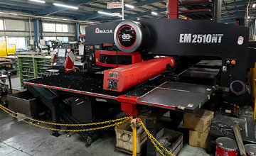
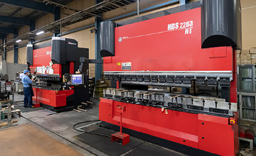
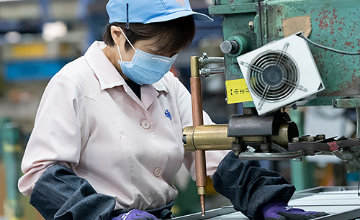
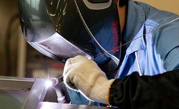
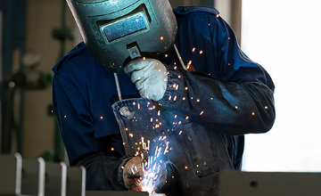
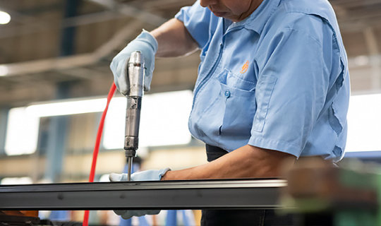
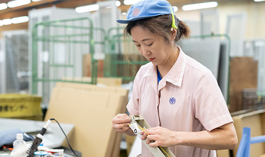
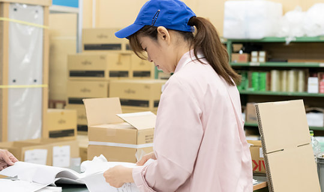
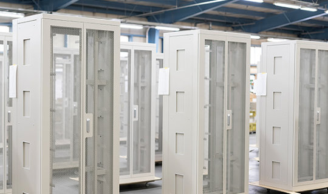

金属板金加工
金属板金加工は長村製作所の得意分野です！
多種多様なお客様からのご依頼にお応えします
加工内容
複合機、NCタレパン加工機、NCベンダー機等を保有しており、特にレーザー加工においては、豊富な技術とノウハウを有しています。金属板金加工のことなら、長村製作所にお任せください！
-
複合機

-
NCタレパン加工機

-
NCベンダー

素材・加工範囲
- 鉄
- 板厚：0.6mm ～ 6.0mm ※4×8サイズ迄
- ステンレス
- 板厚：0.5mm ～ 6.0mm ※4×8サイズ迄
- アルミ
- 板厚：0.8mm ～ 6.0mm ※4×8サイズ迄
溶接加工
溶接ロボットラインによる自動化・省力化設備で
溶接加工の安定供給を実現しています
各種溶接内容
長村製作所では、鉄、ステンレス、アルミなど、素材と用途に合わせて溶接方法の調整等を行い、強度のある美しい製品を製作します。 弊社の強み・特徴でもある大型製品の溶接は、強度を十分に保つことを考慮しながら、美しく仕上げます。
-
スポット溶接

-
アルゴン溶接

-
アーク溶接

ロボット溶接について
長村製作所ではロボット溶接機を導入しており、品質の安定化だけではなく、手作業では難しいスピードとコストメリットの維持に努めています。

6軸関節形アーク溶接ロボット
組立・検査 匠の技が光る、長村製作所の誇る技術の1つです
多種多様な組立作業
長村製作所では、箱物板金製品の組立作業も全て社内で行っています。大型の箱物を得意とし、組立について匠の技が光ります。加工や溶接だけではない、長村製作所の特徴の1つです。


女性の活躍が光る組立・検査
長村製作所では、女性ならではの組立作業や、きめ細かい徹底したチェックを行っています。厳しい目で組立や品質のチェックを行ったのち、自信をもってお客様に製品をお届けいたします。


協力工場 協力工場との横のつながりを大切にしています
表面処理もお任せください!
長村製作所は協力工場にて塗装を行っています。弊社は横のつながりを強化することにより、作業依頼を提供しあうことで技術の共有等を行っています。
